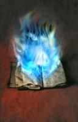

Joué par :
Alyra Joué par :
[ Information masquée ] Age : 24 ans
Sexe : Femme
Race : Humain
Faction : Alliance
Formation : Démoniste
Niveau : 60
Guilde : L'Ordre de la Nouvelle Aube Artisanat 1 : Couturier
Description : Alyra est une jeune femme de taille normale, elle fait preuve d'une réelle beauté et d'un certain charisme. Elle laisse un certain mystère sur son passé qui semble si trouble dans sa mémoire... Des yeux bleux magnifiques et captivants, des cheveux ténèbreux, majestueux... Sa gestuelle est naturelle et elle esquisse souvent un sourire doux et bienveillant.
Quatrième Ère [15]
Lune de la Force [7]
Décade du Panda
Décade du Gorille [1]
Une Souffrance Abominable...
...
Décade de l'Ours [6]
Journal Intime d'Alyra, Chapitre I.
Le début d'un Chapitre,
La fin de mes vingt quatre ans...
Journal Intime d'Alyra, Page I.
Lune de la Force Décade de l'Ours, jour 7
La souffrance fait partie de mes sentiments actuels, mais elle est étrangement liée au bonheur. Mon amour se révèle chaque jour et j'ai pu comprendre que ma passion était tournée vers Kaar, un Elfe Druide. Je ne le connais que depuis peu, pourtant mes sentiments ont déjà fortement amplifiés. Me voilà plongée dans les rêves...
Nous sommes dans le parc, à l'abri de la pluie, sous un arbre, nous discutons puis il me sourit et dans un silence d'amour, mes yeux se ferment, quant à mes lèvres, elles s'approchent lentement de celles de Kaar. Nos deux lèvres se touchent alors... Et nous nous embrassons, les gouttes de pluies nous caressant le visage.
Je retrouve la triste réalité... Les événements de mon passé recommencent à m'engloutir dans ma lamentation devenue habituelle.
Jai alors regardé dans le Ciel
Et jy ai vu des étincelles
Quest-ce que cela pouvait bien être ?
Aujourdhui je pense quil sagissait de lAmour écrit en toutes lettres.
Tandis que le vent souffle dans mes oreilles...
J'entends une musique... Me chantant les profondeurs de mon coeur.
Lorsqu'un être nous est cher, nous sommes capable des choses les plus inimaginables pour protéger celui-ci... Kaar, comment te dire... Les sentiments dépassent les mots, je pourrais résumer ceci en disant "Je t'aime.", mais je trouve que ce serait insuffisant...
Journal Intime d'Alyra, Page II.
Lune de la Force
Décade de l'Ours, jour 8
A Kaar j'ai déclarée ma flamme dans les tourments,
Il semblerait qu'à sens unique étaient mes sentiments,
Malgré tout je garde confiance en l'amour, troublée,
J'en ai assez de fuir à présent je suis préparée,
Dès maintenant je suis prête à affronter, à accepter mon destin,
Seul le temps me dira si mon corps finira dans ses mains,
J'ai très envie de goûter au plaisir de toucher ses lèvres,
Mais je saurais attendre ce que j'appellerais une trêve,
A présent...
Je l'attends...
Journal Intime d'Alyra, Page III.
Lune de la Force
Décade de l'Ours, jour 9
Des images déferlent dans mon esprit telles des vagues tourmentées par une tempête marîtime... Mon esprit est troublé par mes sentiments envers Kaar.
Où suis-je? De quoi ai-je envie? Pourquoi je me retrouve ici?
Une femme apparaît alors, sous un rayon lumineux... Tel un Ange débarquant du ciel, puis elle pose ses mains délicatement sur une pierre soutenant le pont sur lequel je me trouvais... Je me suis alors dit :
- "Ma pauvre petite Alyra, tu deviens folle!"
- "Non tu n'es pas folle, Alyra. Je suis bien là, devant toi, je suis là pour te guider, tu as dit que tu te laisserais porter par le Destin, tes actes ont été entendus."
- "Me guider? En quoi?"
- "Sur la voie de l'Amour que tu as trouvée, mais cet endroit pour toi jusqu'aujourd'hui inconnu doit se réveler sous tous ses éclats. Pour cela il te faut avoir confiance en toi, mais surtout en lui..."
- "A quoi bon... Aimer quelqu'un sans rien en retour..."
- "Il est fragilisé par un amour trop incrusté en lui, n'abandonne pas pour autant, Alyra. Laisse-nous te guider, mais pour cela accroches-toi jusqu'au bout, ne t'arrête jamais face à un obstacle et fais-lui face."
- "... Bien..."
- "A présent je dois me retirer... Garde ces mots gravés en ton coeur, Alyra."
Sous ces paroles, elle a disparue... Illusion ou non, j'ai foi en cet... ange. Et comme elle me l'a fait remarquer, j'ai dit que je laisserais le Destin me porter librement, alors laissons-le faire.
Journal Intime d'Alyra, Page IV.
Lune de la Force
Décade de l'Ours, jour 10
Je viens de me réveiller dans une espèce de petite cellule... Avec un mal de crâne plus qu'atroce, je me suis inspectée, j'ai des contusions un peu partout le long du corps et mes pieds sont enchaînés. Comme vous pouvez le constater, mes mains sont libres et il ne m'a pas dépouillée de mes affaires. Tandis que j'écris, j'ai des "flashs" d' événements récents dans ma tête...
Une odeur abominable de... mort recouvre cette pièce. Des tâches de sang séché sur les murs, des signes d'une langue inconnue ainsi que des outils posés sur une table dans un coin. Je plisse les yeux pour mieux voir les outils... *des larmes ont coulé à cet endroit* A l'heure qu'il est, je suis terrorisée... Il s'est averé que ces outils sont tranchants et dangereux... Je me demande ce que le psychopate désire me faire mais je préferre ôter les choses atroces qui fusent dans ma tête.
... *Des taches de sang ainsi que des larmes parcourent le bas de la page*...
C'est plus horrible encore que je ne le croyais... Une véritable terreur brûle en moi. Je n'ai presque pas vu son visage, il faut dire que la pénombre domine grandement dans cette maudite geôle! Je suis réellement paniquée et dégoutée... Je n'ai jamais pu observer une abomination pareille! Il... Il m'a tailladée à plusieurs endroits... Le sourire au lèvres de me voir hurler de douleur... Je ne sais si je vais ressortir vivante, mais j'espère que mon journal parviendra à quelqu'un... Que l'on sache ce que ce salaud m'a fait! Mon coeur bat comme jamais auparavant... Une ombre s'est formée sous le bas de la porte... Il... Il se trouve juste derrière... Il ouvre lentement la porte... Je dois cacher mon journal!
Lune d'Agilité [3]
Décade du Tigre [3]
Journal Intime d'Alyra, Page VI
Lune d'Agilité
Décade du Tigre, jour 2
Une chose que je pensais enfouie dans le passé est revenue dans ma mémoire... Ce fameux soir où j'ai dansée... Je m'en rappelle comme si c'était hier.
C'était une longue nuit d'Hiver... Les messires avaient besoin de se réchauffer dans une bonne petite taverne. Je dansais sur le comptoir, souriant à ceux qui me regardaient tel un ange tombé du ciel... Mes mouvements à la fois vifs, gracieux et féminins... La danse du ventre... Le balancement silencieux de mes fesses... Les cheveux volant face à la célérité de mes gestes... Et mon corps en harmonie avec la musique qui retentissait... Ce n'était pas mon cerveau qui m'ordonnait de bouger cette fois-ci, c'était mon corps qui se guidait librement... Je continuais alors ma danse, la taverne se remplissant et les regards se tournant de plus en plus vers mon corps... Une impression de sang divin... d'un pouvoir envoûtant...
Bien sûr, je reviens au présent. Ces images m'ont fait du bien en ce moment, je broie légèrement du noir, impatiente d'embrasser Kaar...
Journal Intime d'Alyra, Page VII
Lune d'Agilité
Décade du Tigre, jour 3
Aujourd'hui j'ai revu Kylia... Après un long moment... Le passé réveillé d'hier est d'ailleurs lié à l'époque où j'étais avec elle. Nous étions associées en tant que prostituées... Mais avec nos propres règles :
1 - Ne jamais embrasser le client, car il s'agit d'un signe d'Amour.
2 - Toujours vérifier si il est clean et en état / possibilité de payer.
3 - Ne jamais séduire sans la lame cachée dans la botte cavalière.
4 - Seuls les Humains et les Elfes peuvent nous toucher, les autres créatures : On les envoie ailleurs.
5 - Si jamais un macro ou autre vient perturber nos affaires... Nous devons nous entre-aider et en parler directement.[/i]
Nous nous sommes séparées sur un dernier pacte suite à des problèmes avec un salaud... Il nous a tabassées jusqu'au sang et encore bien plus après... Nous baignions gratuitement dans notre sang... Ainsi, le pacte de Non-Prostitution jusqu'à notre mort a été décreté.
Ca m'a fait du bien de la revoir...
Journal Intime d'Alyra, Page VIII.
Lune d'Agilité Décade du Tigre, jour 4
Les nuits sont dures dans mon esprit ces temps-ci...
De lourds cauchemards m'envahissent chaque soir...
Je ne sais encore que penser de la tournure des événements. Un fragment d'un passé récent semble me manquer pour comprendre l'énigme de mes cauchemards.
Je rêve d'une femme, puissante... Du nom de Merenptah, la Septième de la Main de Sarmate, en réalité j'incarne Merenptah sous mon apparence humaine... Je vois aussi Radjah... Un humain étrange que j'ai aidé et croisé plusieurs fois, en revanche, dans mes rêves, je semble bien le connaître.
Arrive le moment où je sors un poignard de ma poche et que je saute sur le premier humanoïde qui a le malheur de passer la ruelle sombre de Stormwind... Je le poignarde d'une façon très inquiètante et toujours la même : Deux coups sur chaque bras, un coup dans l'entrejambe, une taillade dans le cou et pour finir, je lui plante la lame dans le coeur...
Je n'ai pas vu Kaar depuis un certain temps, je m'inquiète pour lui, mais aucun signe de danger.
Décade du Singe
Décade du Faucon
Lune de l'Esprit [5]
Décade de la Chouette [4]
Le Combat de la Haine, Partie I
Lune de l'Esprit
Décade de la Chouette, jour 8
Les Grandes Profondeurs du Désert de Tanaris... Deux silhouettes sont visibles, placées chacune sur une dune, se tenant tête. Il s'agit d'Alyra, habillée en combattante des sables; face à elle, un homme cagoulé, l'aura qu'il dégage est deux fois plus imposante que celle d'Alyra, inspirant un sentiment de malaise, un symbole de la Mort. Le vent souffle plus fort qu'à son habitude, créant de légers tourbillons de sable. Alyra soulève légèrement sa tête, puis, d'une voix assurée, dit :
- " Ainsi nous nous retrouvons, Morben*. "
(* Morben Fell est l'homme qui a massacré les parents d'Alyra, qui a pu entendre les hurlements de douleur de ceux-ci, et qui s'en rappelle encore, à cette époque là, elle était agée de six ans.)
L'homme lui répondit d'une voix grave, mystérieuse et troublante :
- " Tu t'es beaucoup améliorée depuis notre dernière rencontre, Alyra. Seulement j'ai moi aussi pu développer de nouveaux sorts, et tu ne sera pas au bout de tes surprises. "
- " Avant, explique-moi la raison de ton arrivée soudaine. Tu es lié à mon frère, Ashrän?! "
L'homme sourit... - " Tu es perspicace. Oui, c'est bel et bien ton frère qui m'a ordonné de te supprimer, une tâche trop simple pour la refuser. "
- " Parfait, alors ne tardons plus, et finissons-en! "
Sous ces mots, Morben Fell se met alors en position d'attaque, tout comme Alyra. Un combat terrible, puissant et dangereux commence alors...
Le Combat de la Haine, Partie II
Lune de l'Esprit
Décade de la Chouette, jour 8
- Morben Fell : Homme classé de niveau très dangereux, accablé d'une folie démesurée, il est puissant et cruel.
Spécialisé dans les sorts de distance, ses techniques sont généralement liées à des serpents d'aura immatérielle. Sa réserve d'énergie vitale est élevée, il est donc difficilement épuisable au combat. Son point faible reste alors le combat rapproché.
- Alyra Deloï : Femme classée de niveau dangereux, elle a une volonté d'acier et un amour envers ses proches surélevé qui fait majeure partie de sa puissance.
Spécialisée dans les sorts à distance elle aussi, ses techniques sont généralement liées à l'ombre. Sa réserve d'énergie vitale est assez élevée, mais il n'est pas impossible de l'épuiser.
Son point faible est son hémophobie, si jamais elle vient à voir une trop grande quantité de sang, c'en est fini d'elle.
Morben prend alors l'initiave, lançant son premier sort :
Morsure du Cobra. Une forme énergique représentant un Cobra Royal se forme et charge Alyra.
- ** Si je laisse Morben Fell me prendre à distance, il vaincra, je peux en être sûre, il faut que je le prenne au corps à corps... Et pour ça je ne connais qu'une seule technique. **
Sous cette pensée, Alyra lance à son tour son sort :
Décuplement des Forces x3, cette technique consiste à décupler la puissance et la force des coups d'Alyra, avantageant un combat au corps à corps... Malgré tout, il y a un point faible : Son énergie vitale diminue rapidement tant que le sort est actif.
Le Combat de la Haine, Partie III
Lune de l'Esprit
Décade de la Chouette, jour 8
Alyra esquive sans aucun problème la technique de Morben Fell, et le charge à son tour, sa célérité étant décuplée elle aussi. Il dégaine alors deux lames tranchantes, d'un coup pied, Alyra le désarme de l'une d'elle... Morben prend un sourire maléfique et pointe son autre lame en l'air, prêt à attaquer.
- " Tes attaques au corps à corps sont trop lentes! "
Alyra s'apprête à le frapper, lorsque du sang vient se mélanger au sable... Morben ne s'attaquait pas à Alyra, mais à lui-même, connaissant le point faible de celle-ci : Son hémophobie. Elle équarquille les yeux... Plongée dans une paralysie totale de terreur... Elle s'écroule au sol, soumise, inférieure, incapable d'émettre la moindre esquive ou attaque. Morben sourit :
- " Tu voulais un combat rapproché, alors? Je vais te faire l'honneur de mourir de la manière que tu as choisie en ce cas... "
Il la roue de coups sans aucune pitié... Alyra pousse des hurlements de douleur mais reste immobile, tremblante... Morben sort une dague et la coupe au bas du ventre, elle gémit d'une souffrance sans limite et tombe dans le sable, larmoyante. Des images déferlent dans son esprit... ** Romano ... Kaar ... Darek ... Camylle ... Cevi ... Scheena ... Amelie ... Je ... Je ne vous abandonnerais pas ... **
Alyra cesse alors de trembler, et lorsque Morben s'apprête à la trancher, elle roule sur le côté, le laissant frapper dans le sable.
Le Combat de la Haine, Partie IV
Lune de l'Esprit
Décade de la Chouette, jour 8
Alyra se relève, donnant un coup de pied de plein fouet (puissance x3) à Morben, celui-ci est projetté à plusieurs mètres plus loin.
- " Comment?! Tes tremblements ont cessés?! "
Les yeux d'Alyra adoptent un noir profond... Son aura se développe et encercle le long de son corps, tel un bouclier. De son alliance se dégage aussi une aura rougeoyante, semblable à des flammes, qui l'enveloppe à son tour. Alyra est à présent nourrie par l'Adrénaline, l'Amour envers Romano et la Haine envers Morben.
- " Libération du Sceau de Décuplement..."
L'aura noire et l'aura rougeoyante semblent s'incruster dans la peau d'Alyra, décuplant ses forces cette fois-ci par dix. Bien entendu, l'énergie vitale descend à une vitesse incroyable avec ce sort. Morben Fell n'a même pas le temps de se relever qu'Alyra commence un enchaînement de coups impressionants...Alyra concentre son énergie dans les parties les plus importantes : Coups de poing et coups de pieds latéraux, coup de poing dans la machoire supérieure. Morben arrive à esquiver quelques coups, mais trop difficilement...
Alyra démarre alors la Combinaison de Fatalité : Coup de poing remontant au menton, Morben est projetté en l'air, Alyra saute puis lui donne un coup de pied dans les côtes, il se rattrape en retombant, et démarre une incantation immédiate :
Anaconda étreintant, un anaconda sort de la robe de Morben puis emprisonne les bras d'Alyra, la maintenant au dessus du sol.
Il dégaine une longue épée bâtarde très tranchante et la lance tel un piquet sur Alyra. Celle-ci retient de justesse l'épée de ses pieds, puis elle la relâche en la balancant plus loin, elle développe par la suite son énergie le long de ses bras et se débarasse de l'étreinte de l'anaconda en se rattrapant lors de la chute.
** Je dois tenter le tout pour le tout... **
- " Activation du Sceau de Décuplement suprême : Main Droite. "
Une puissante énergie caresse la main droite d'Alyra, multipliant sa force par vingt dans cette main... Elle se précipite vers Morben qui se prend le coup en plein dans la joue... Alyra enfonce bien son poing, ce qui le renvoie sur la dune rivale. Essouflée, Alyra s'affale dans le sable, prise d'un rire nerveux. Elle jette tout de même un coup d'oeil à Morben, qui ne bouge plus... Alyra, trop épuisée d'avoir utilisée toute son énergie, s'endort sous les doux murmures du vent...
Décade de la Baleine
Décade du Lapin [1]
Une paix trouvée?
C'est une soirée de pleine lune, une légère bise balaye le sable de Tanaris...
la clareté de la lune éclaire la forêt sylvestre d'Ashenvale...
la brume s'étend dans les terres de Lordaeron,
Alyra domine une colline, ses cheveux ondulent avec grâce sous le vent glacial,
sa robe suivant ce même rythme. Des larmes coulent délicatement le long de son visage,
ce visage qui s'adresse aux cieux. Puis elle plisse les yeux
et fronce ses traits sous la pluie vestale qui commence.
Une pensée s'illumine en elle... Romano... Clemanas... Xaaç... Kidor... Kaar...
Les cinq seuls hommes qui ont pu la rendre heureuse... Chose qui n'a jamais sue être rendue.
Elle se voit d'abord embrassant Clemanas sous une tente bercée par le bruit de la pluie extérieure...
Elle se voit ensuite en tête à tête avec Kaar, lui parlant de toute sa vie...
Elle se voit par la suite se mariant avec Romano, lui promettant amour pour l'éternité...
Elle se voit allongée dans l'herbe de Moonglade auprès de Xaaç...
Elle se voit coller ses lèvres à celles de Kidor sous un cercle lunaire.
Parmis tous ces hommes, Romano est le plus haut placé en son coeur, elle le sait depuis
toujours et en a assez de l'avoir fait souffrir.
Ses amis fusent en son esprit... Elle fond en larmes mais se reprend, entrant dans une
maison proche, elle referme la porte derrière elle... Quelques minutes plus tard,
du sang glisse au dessous de cette porte... Personne ne saura qui siègait en cette
sinistre demeure... C'est ici que débuta la disparition d'Alyra et la fin de la souffrance pour ces hommes...